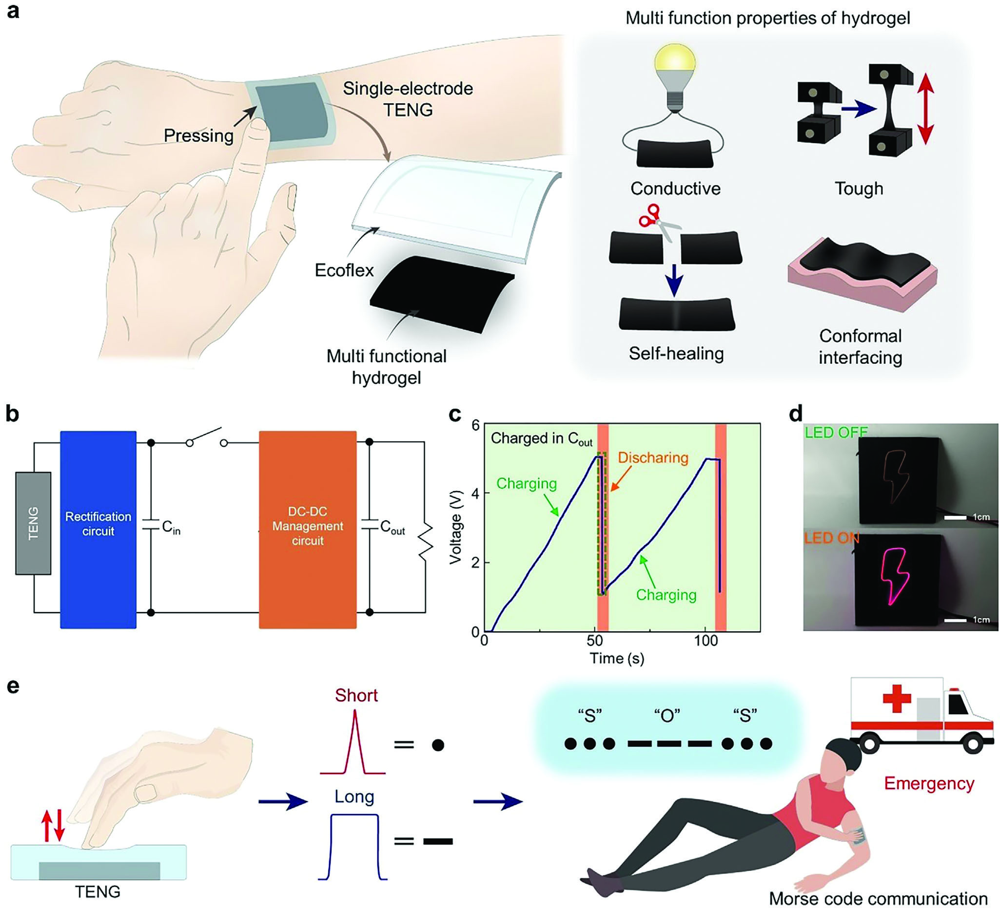

Research context and placement
Joining the hydrogel electrode and elastomer triboelectric layer to a power-management circuit establishes a system-assembly focus. Tissue contact and stretchable conduction are secondary.
Research background
A triboelectric generator can convert movement into electrical output, but a large open-circuit voltage is not immediately usable device power. Low-frequency motion and high impedance make storage and delivery important. This study combines a compliant generator with power management.
Approach and advances
The hydrogel electrode and Ecoflex layer form the compliant generator. A small temporary capacitor accumulates energy before threshold-triggered switching transfers it through the conversion circuit to output storage. Material recovery and managed energy transfer solve different problems.

Overview of the multifunctional hydrogel–elastomer triboelectric generator, energy-storage circuitry, LEDs and Morse-code demonstration.
Jinseok Oh, Minkyong Kang, Jae Park et al.. “Autonomously Self‐healing, Adhesive, and Stretchable Triboelectric Nanogenerator Using Multifunctional Hydrogel‐Elastomer Double Layer with a Power Management Circuit”. Figure 1. DOI: 10.1002/aelm.202400013. CC BY 4.0. A standalone extraction of the single embedded figure JPEG was copied byte-for-byte. No rendering, cropping, annotation or color-space conversion was performed.
Source figure and caption ↗ · DOI: 10.1002/aelm.202400013 ↗ · CC BY 4.0 ↗
Evaluation and conditions
Output comparisons require motion and load conditions; storage comparisons require matched capacitance and duration. The paper separates direct charging from managed charging. LED and touch/Morse demonstrations show applications, not the energy balance of every continuously operating device.
Key findings
With the same 100 µF capacitor charged for one minute, energy increased by 1.06 µJ under direct charging and 2.93 µJ with power management. This shows improved collection for that load and interval. It does not establish the same improvement in maximum open-circuit voltage or overall system efficiency.
Limits and open questions
Hydrogel recovery does not establish complete self-healing of Ecoflex, wiring and circuitry. Humidity and cycling claims remain bounded to tested conditions. Load-specific usable energy and post-damage system behavior require further comparison; universal battery replacement is not established.
Related external research
Ultrastretchable, transparent triboelectric nanogenerator as electronic skin for biomechanical energy harvesting and tactile sensing
Pu combines ionic hydrogel and elastomer for stretchable harvesting and touch sensing; the comparison here is recovery/adhesion plus power management.
Only the external abstract was read; architecture and operating mode prevent direct peak-output comparisons.
Abstract checkedCorresponding-author verification
Jungmok Seo: corresponding authorThis record concerns Jungmok Seo’s correspondence designation. Author order or an asterisk alone is not treated as confirmation; this check is separate from verification of the research content.
- Correspondence evidence source ↗
Corresponding Author — Jungmok Seo
Author information: Kijun Park and Jungmok Seo blocks; local PDF p. 1 email match · public_publisher_author_information_read
- Correspondence evidence source ↗
J. Seo; E-mail: [redacted]
Published PDF page 1: linked author affiliation and E-mail; title and DOI · local_published_pdf_read
- Main-text review scope
- Read public Wiley double-layer, recovery, power-management and device-demonstration text; reread §2.4 on pp. 6–8 of the matching local published PDF to confirm temporary storage, threshold switching and output transfer. Supplementary videos/SI were not comprehensively read.
- Supplementary review scope
- Supporting information was not comprehensively read. A main-text citation to supplementary results does not count as direct inspection of those results.
- Pending verification
- The main-text comparison using the same capacitor and one-minute charging was checked. Supplementary circuit losses, additional charging and humidity conditions, and whole-device recovery still need reconciliation. These remaining checks do not make the approved main-text account incomplete.
COVERAGE & OUTREACH
Coverage and outreach
Links are checked for their relationship to this paper. Media publication does not establish independent reporting or additional experimental validation.
No related outreach link was verified against its body within these searches. This does not establish that none exists.
Channel coverage and search log for all 101 records →Sources and verification scope
Read public Wiley double-layer, recovery, power-management and device-demonstration text; reread §2.4 on pp. 6–8 of the matching local published PDF to confirm temporary storage, threshold switching and output transfer. Supplementary videos/SI were not comprehensively read.
The additional commentary is editorially approved within the stated evidence scope. This does not imply complete verification of all main-text and supplementary material.
- Additional main-text review scope
- Read public Wiley double-layer, recovery, power-management and device-demonstration text; reread §2.4 on pp. 6–8 of the matching local published PDF to confirm temporary storage, threshold switching and output transfer. Supplementary videos/SI were not comprehensively read.
- Additional supplementary review scope
- Supporting information was not comprehensively read. A main-text citation to supplementary results does not count as direct inspection of those results.
- Public publication baseline ↗ · #76 · 2026-10-03
- Crossref metadata ↗: Only public bibliographic metadata registered with Crossref was checked. This does not mean that the publisher page, abstract, or full text was read; full-text verification in the school Chrome session remains pending. license_urls lists registered links and does not establish permission to redistribute text or figures. It may include TDM or posting-policy links.
- Autonomously Self-healing, Adhesive, and Stretchable Triboelectric Nanogenerator Using Multifunctional Hydrogel-Elastomer Double Layer with a Power Management Circuit ↗
public_web_full_text · Results: double layer, electrical output, power management; Figs. 4–5; Conclusion - Autonomously Self‐healing, Adhesive, and Stretchable Triboelectric Nanogenerator Using Multifunctional Hydrogel‐Elastomer Double Layer with a Power Management Circuit ↗
local_published_pdf_selected_full_text_read · PDF pp. 6–8, §2.4: high-impedance TENG and power-management rationale - Autonomously Self‐healing, Adhesive, and Stretchable Triboelectric Nanogenerator Using Multifunctional Hydrogel‐Elastomer Double Layer with a Power Management Circuit ↗
local_published_pdf_selected_full_text_read · PDF pp. 6–8, §2.4: temporary capacitor, threshold-triggered switch and DC buck/output storage; double-layer Results - Autonomously Self‐healing, Adhesive, and Stretchable Triboelectric Nanogenerator Using Multifunctional Hydrogel‐Elastomer Double Layer with a Power Management Circuit ↗
local_published_pdf_selected_full_text_read · PDF pp. 6–8; Figs. 4–5: charging and device demonstrations - Autonomously Self‐healing, Adhesive, and Stretchable Triboelectric Nanogenerator Using Multifunctional Hydrogel‐Elastomer Double Layer with a Power Management Circuit ↗
local_published_pdf_selected_full_text_read · PDF p. 7, §2.4 and Fig. 4f: 100 µF output capacitor, one-minute direct versus managed charging - Autonomously Self‐healing, Adhesive, and Stretchable Triboelectric Nanogenerator Using Multifunctional Hydrogel‐Elastomer Double Layer with a Power Management Circuit ↗
local_published_pdf_selected_full_text_read · Results: hydrogel recovery and tested humidity; Conclusion; editorial system-level limits - Autonomously Self‐healing, Adhesive, and Stretchable Triboelectric Nanogenerator Using Multifunctional Hydrogel‐Elastomer Double Layer with a Power Management Circuit ↗
independent_reviewer_selected_main_text · Published-PDF text p.6–8, Figure 3–4 captions, output/recovery text, §2.4 power management and §2.5 Morse-code portion - Additional commentary source ↗
Research background · PDF pp. 6–8, §2.4: high-impedance TENG and power-management rationale · local_published_pdf_selected_full_text_read - Additional commentary source ↗
Approach and advances · PDF pp. 6–8, §2.4: temporary capacitor, threshold-triggered switch and DC buck/output storage; double-layer Results · local_published_pdf_selected_full_text_read - Additional commentary source ↗
Evaluation and conditions · PDF pp. 6–8; Figs. 4–5: charging and device demonstrations · local_published_pdf_selected_full_text_read - Additional commentary source ↗
Key findings · PDF p. 7, §2.4 and Fig. 4f: 100 µF output capacitor, one-minute direct versus managed charging · local_published_pdf_selected_full_text_read - Additional commentary source ↗
Limits and open questions · Results: hydrogel recovery and tested humidity; Conclusion; editorial system-level limits · local_published_pdf_selected_full_text_read - Additional commentary source ↗
Connections to related work · Double-layer and power-management Results; external abstract · local_published_pdf_selected_full_text_read - Additional commentary source ↗
Connections to related work · Ultrastretchable, transparent triboelectric nanogenerator as electronic skin for biomechanical energy harvesting and tactile sensing; DOI 10.1126/sciadv.1700015; previously verified Abstract · public_external_abstract_read